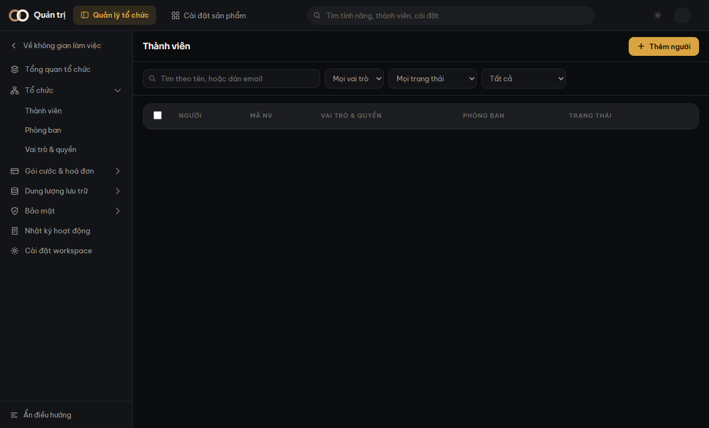

Màn Thành viên — ba loại dòng
Vì sao một người có thể hiện ra hai lần, và ô gạch đứt trong bảng nghĩa là gì.
Màn Thành viên gộp hai thứ khác nhau vào một bảng:
- Tài khoản đăng nhập — thứ dùng để vào hệ thống. Có email, có vai trò.
- Hồ sơ nhân sự — thứ phòng nhân sự giữ. Có mã nhân viên, chức danh, phòng ban.
Chúng là hai khái niệm, không phải một. Vì vậy bảng có ba loại dòng, và cả ba đều bình thường.

Ba loại dòng
| Dòng | Nghĩa là gì |
|---|---|
| Có cả hai | Người bình thường: có hồ sơ, có tài khoản, đã nối với nhau. |
| Chỉ hồ sơ | Nhân viên mới, chưa được cấp tài khoản. |
| Chỉ tài khoản | Tài khoản máy, hoặc người vừa được cấp tài khoản mà chưa dựng hồ sơ. |
Ô gạch đứt trong bảng không phải dữ liệu bị mất. Nó nói đúng một chuyện: phần đó chưa có, và đó là trạng thái hợp lệ.
Ô lọc Lọc theo loại ở thanh trên lọc đúng hai trạng thái khuyết này. Đó là cách nhanh nhất tìm ra ai đang cần cấp tài khoản.
Vì sao một người có thể hiện ra hai lần
Hệ thống không tự ghép theo email. Nếu người này tạo tài khoản còn người kia dựng hồ sơ mà không ai nối lại, cùng một con người sẽ nằm ở hai dòng — dù email giống hệt nhau.
Tự ghép theo email nghe tiện và sai một cách nguy hiểm: phòng kinh doanh dùng chung
sales@congty.vn thì hai người khác nhau bị gộp thành một dòng.